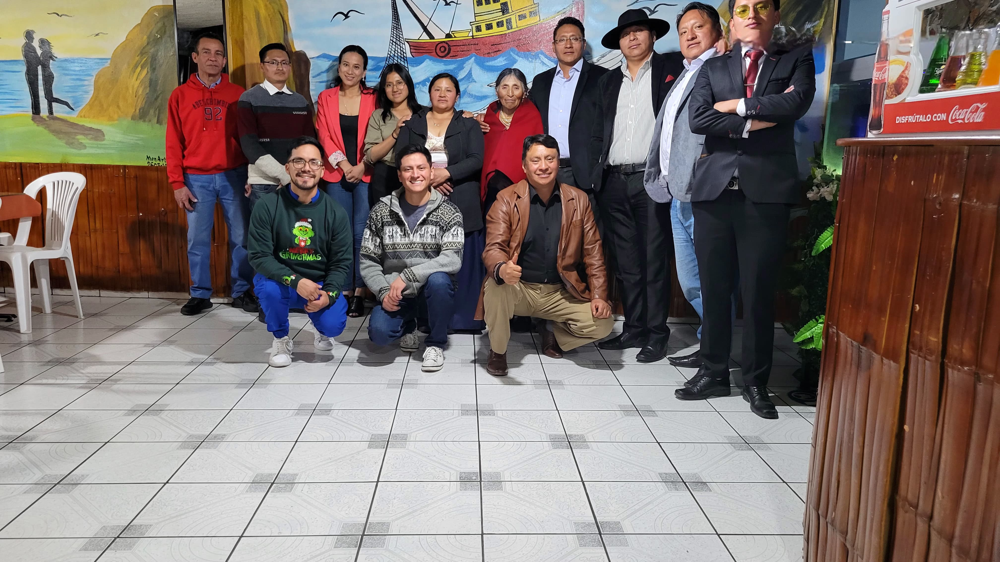
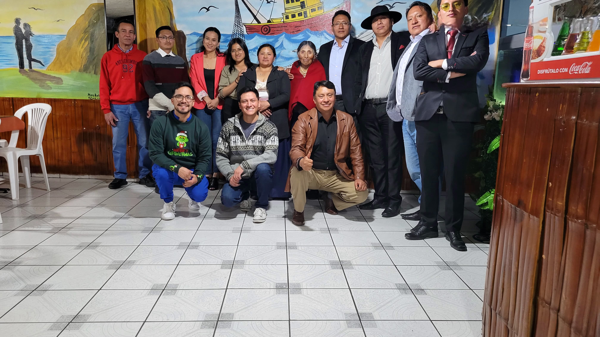
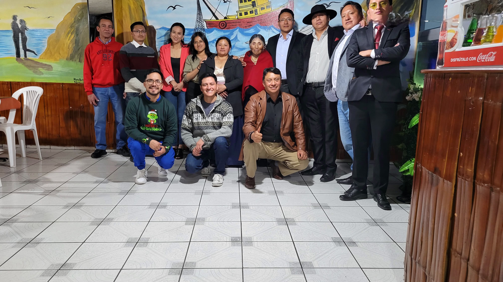

Su salud en buenas manos

Quiénes somos: Somos un centro médico comprometido con la salud integral de nuestra comunidad.
Misión: Brindar atención médica de calidad con enfoque humano y cultural.
Visión: Ser el referente en salud comunitaria en la región.
Servicios prioritarios: Medicina familiar, medicina andina, pediatría.
Especialidad: Medicina Familiar
Estudios: Universidad de la Habana
Experiencia: 10 años en atención hospitalaria